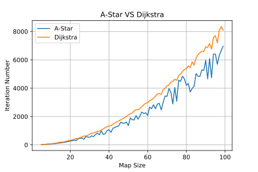

A^* algorithm for path finding
1 Problem
The graph is one of the most significant structures in the algorithms, because this structure can represent many real life cases, from streets to networks.
And one is the most popular problem is: Find the least sum of graph edges for given start and end points
Generally, we need determine input and output data:
- Input data: graph map and end or start point/node (or both for certain path) - Output data: paths (or intermediate points/nodes) with the least sum of graph edges as result
2 Solutions
Today there is a variety of algorithms for solving this problem, and solutions have their own advantages and disadvantages regarding the task, so let’s consider main of them:
2.1 Breadth First Search
This is the simplest algorithm for graph traversing. It starts at the tree root (it may be start/end node) and explores all the neighbor nodes at the present depth prior to moving on to the nodes at the next depth level.
| Origin Graph | Result Tree | Animation |
|---|---|---|
 |
 |
 |
Obviously this algorithm has low performance: O(\vert V \vert + \vert E\vert) = O(b^d), where b is branch factor (average quantity of children nodes in tree, e.g. for binary tree b=2) and d is depth/distance from root.
2.2 Dijkstra’s algorithm
| Description | Animation |
|---|---|
| Dijkstra’s Algorithm (also called Uniform Cost Search) lets us prioritize which paths to explore. Instead of exploring all possible paths equally (like in Breadth First Search), it favors lower cost paths. | _________________________ |
2.3 Greedy Best-First-Search
With Breadth First Search and Dijkstra’s Algorithm, the frontier expands in all directions. This is a reasonable choice if you’re trying to find a path to all locations or to many locations. However, a common case is to find a path to only one location. Let’s make the frontier expand towards the goal more than it expands in other directions. First, we’ll define a heuristic function that tells us how close we are to the goal. E.g. on flat map we can use function like H(A, B) = |A.x - B.x| + |A.y - B.y| , where A and B are nodes with coordinates {x, y}. Let’s consider not only shortest edges, but also use the estimated distance to the goal for the priority queue ordering. The location closest to the goal will be explored first.
| Result of Heuristic function | Animation |
|---|---|
| We can see that firstly nodes, that are closer to target are considered at first. But when algorithm finds a barrier, then it tries to find the path to walk around, but this path is best from the corner, not from the start position, so the result path is not the shortest. This is a result of the heuristic function. To solve this problem let’s consider next algorithm | _________________________ |
2.4 A-Star Algorithm
Dijkstra’s Algorithm works well to find the shortest path, but it wastes time exploring in directions that aren’t promising. Greedy Best First Search explores in promising directions but it may not find the shortest path. The A* algorithm uses both the actual distance from the start and the estimated distance to the goal.
| Result of Cost and Heuristic function | Animation |
|---|---|
| Because of considering both cost and result of heuristic functuion as result metric for Dijkstra’s algorithm, we can find the shortest path faster, than raw Dijkstra’s algorithm, and precisely, than Greedy Best-First-Search | _________________________ |
2.5 A-Star Implementation
Let’s take a closer look at this algorithm and analyze it with code example. First of all you need to create a Priority Queue because you should consider points, which are closer to destination from start position. Priority does not equal cost. This Queue contains possible points, that are to be considered as possible shortest way to destination.
## Only main methods
class PriorityQueue:
# Puts item in collection, sorted by priority.
def put(self, item, priority):
# Returns the most priority item.
def get(self):Also you need a class, that describes your Graph Model with 2 methods. First finds neighbors of current node, and second returns cost between current node and next. This methods allows to implement any structure, be neither grid, hexagonal map or graph.
## Only main methods
class SquareGrid:
# Returns neigbours of 'id' cell
# according to map and 'walls'.
def neighbors(self, id):
# Returns cost (or distance) between 2 cells.
# Applicable for neighbors only.
def cost(self, current, next):Also you need to add your heuristic function too. Because, e.i. on a grid, a cost is always equals to 1 (if you don’t use diagonals), so it would be like a Breadth First Search, but you know a destination point, so you can use direction.
def heuristic(a, b):
(x1, y1) = a
(x2, y2) = b
return ((x1 - x2)**2 + (y1 - y2)**2)**.5Now we can implement our A-Star algorithm. First of all we need to init our algorithm: frontier stores points according to priority. We will store information in dictionaries:
- came_from like pair <TO point : FROM point>
- cost_so_far like pair <Point : Distance from start>
Firstly add our start point to them. Than, for each point (temporary as origin we find its neighbors and for each calculate the cost as: cost from origin to neighbor. If there is no information about this node in Queue or the cost is less than before, that add this point to queue with priority = cost + heuristic. Last step allows to consider more closer point to destination at first.
def a_star_search(graph, start, goal):
## Create a queue and add start point
frontier = PriorityQueue()
frontier.put(start, 0)
# Dictionaries with init for start point
came_from = {}
cost_so_far = {}
came_from[start] = None
cost_so_far[start] = 0
# Not all neighbors are visited
while not frontier.empty():
# Get next node (firstly it is start one)
current = frontier.get()
if current == goal:
break
# Find all neighbor nodes
for next in graph.neighbors(current):
new_cost = cost_so_far[current] + graph.cost(current, next)
# Not visited or cost to it is less
if next not in cost_so_far or new_cost < cost_so_far[next]:
cost_so_far[next] = new_cost
priority = new_cost + heuristic(goal, next)
frontier.put(next, priority)
came_from[next] = current
return came_from, cost_so_far
3 Results
Now let’s try to compare Dijkstra’s algorithm with A-Star. For this task we will generate map with size from 5 to 50 with step equal 3. Start position is in left top corner, and End position is opposite. Also, we will generate corners (the quantity is SIZE^0.4), with random length for one side and other side to the end of the map. Generated Maps you can find below, there is only example and comparison plot of iterations depending on the map size.
| Dijkstras | A-Star |
|---|---|
 |
 |
| Due to the fact that the algorithm does not know the final position, it considers all possible directions, including dead ends, which affects the number of iterations | Due to the fact that the algorithm knows the final position, it first considers those points that are closest to the target, so in some cases it does not go into false dead ends |

It is seen that in most cases A^* finds faster. However, there are situations where heuristics do not help, and in this case A-Star works the same way as Dijkstra’s.
4 Code
Open In Colab{: .btn }